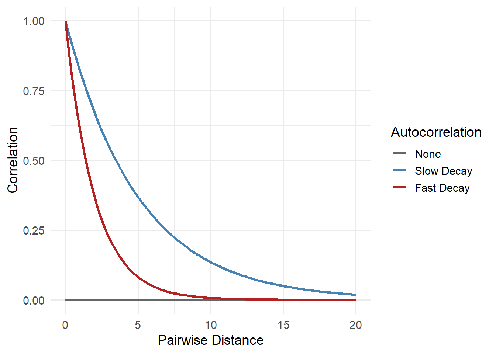

Imagine you’re surveying a species across a landscape. You visit dozens of locations, scattered across a region, recording whether or not the species is detected. Now these surveys don’t happen in a vacuum; at each site there is some sort of underlying habitat quality. Here’s what your landscape and survey locations might look like:
Code
library(ggplot2)library(viridis)
Loading required package: viridisLite
Code
library(imager)
Loading required package: magrittr
Attaching package: 'imager'
The following object is masked from 'package:magrittr':
add
The following objects are masked from 'package:stats':
convolve, spectrum
The following object is masked from 'package:graphics':
frame
The following object is masked from 'package:base':
save.image
Code
library(dplyr)
Attaching package: 'dplyr'
The following object is masked from 'package:imager':
where
The following objects are masked from 'package:stats':
filter, lag
The following objects are masked from 'package:base':
intersect, setdiff, setequal, union
We have some sites that are in “good” habitat and some that are “bad” (keep in mind that “habitat quality” here is just the lazy way I’ve simulated habitat). Importantly, like most real world habitats, the habitat changes gradually - we don’t go from extremly high quality to extremely low quality. In any case, we go place our cameras in the landscape (the black dots) and collect our data.
Let’s say we then take this data and fit a model to understand how features of the habitat (e.g. distance to roads) influences occupancy. Looking at your results, you notice something odd:
Two nearby locations that have completely contrasting covariate values have very similar occupancy probabilities (e.g. Site A has very tall trees and Site B has grassland but both have 62% predicted occupancy).
Coversly, two other sites which are very far apart from each other but have identical covariate values show totally contrasting predicted presence and absence (e.g. Site C has grassland and Site D has grassland but Site A has 6% occupancy and Site B has 87%).
This “clumping” effect suggests your model might be missing something.
What is Spatial Autocorrelation?
Spatial autocorrelation refers to the phenomenon where data (e.g. habitat, detections, weather) collected at nearby locations tend to be more similar (or dissimilar) than those collected at distant locations. In the context of species occupancy, this means that whether a species is present at one site may provide information about its presence at nearby sites.
Consider how we could describe this. Any site we choose it will be perfectly correctly with itself - if the trees are tall in Site A that correlates perfectly with Site A that has tall trees. So simple and stupid that it might be confusing; All sites are perfectly correlated with themselves. In truth, we don’t particularly care about that, but it’s never-the-less true. What’s of more interest is how two different sites are correlated with each other. For example, Site 1 and Site 2 may have a correlation of 0.42. Site 1 and Site 3 is maybe 0.63. And so on, and so on.
It gets pretty miserable to write that out in text. Thankfully, there’s a convenient way to write this. Let’s see what that might look like for our ten sites from the example above:
This is something called a variance co-variance matrix. Each row and column represents a site (in this case); \(S1\) is Site 1, \(S2\) is Site 2, and so on. The values, between 0 and 1, represent the correlation between \(S_i\) and \(S_I\). Notice that Site 1 is perfectly correlated with itself? That’s good - we said it should be. Your height is perfectly correlated with your height. Like we said above, the more interesting part is when we look at different sites. For example, \(S1\) and \(S2\) have a correlation of 0.42. \(S1\) and \(S3\) is 0.63. \(S2\) and \(S3\) is 0.39. This shows that sites 1 and 3 are very similar to each other.
The lower triangle of the matrix is left empty to reduce clutter but it is simply a mirror of the upper triangle. The Diagonal is how much sites correlate with themselves.
Looking at these correlations, our question may be: Are these correlations because they are close to each other in space? Is that why they’re so similar?
To anser this we need one last piece of information: something called pairwise distance. Pairwise distance is simply the distance between a pair of sites. As simple as that.
If we have both pieces of this information, we can estimate spatial autocorrelation at increasing pairwise distances. This can take various forms but here are some examples of what this may look like:
Warning: Using `size` aesthetic for lines was deprecated in ggplot2 3.4.0.
ℹ Please use `linewidth` instead.

The figure above shows how the similarity between nearby locations could change as the pairwise distance between them increases. These three lines are examples of spatial autocorrelation, the idea that places close to each other tend to be more alike than places far apart.
The grey line shows a world where there’s no spatial pattern, or clustering, at all: knowing what happens at one site tells you nothing about another, no matter how close. In reality, this is pretty rare in ecology. Animals move, plants disperse seeds, and environments like soil, moisture, and temperature usually change gradually. That means sites to each often share similar ecological conditions and our observations of these.
The red line, fast decay, might reflect species with small home ranges or patchy habitats. For instance, frogs that only live in isolated wetlands may show very different occupancy just a few kilometers apart. The blue line, slow decay, could reflect species that occupy large territories or respond to broad environmental gradients. Think of a forest-dwelling bird that ranges over many square kilometers; if it’s present in one forest, it’s probably also nearby.
Whether spatial autocorrelation fades quickly or slowly matters. If it fades slowly and we ignore it, we might wrongly assume we have lots of independent data when really we’re just seeing the same pattern repeated locally. That can lead to overconfident conclusions and poor predictions. Understanding how fast that decay happens helps us choose the right tools to model and account for it.
Strategies for Addressing Spatial Autocorrelation
There are several strategies for dealing with spatial dependence in ecological models. We’ll only be using one of these in spOccupancy but these are some of the generic options:
Spatially explicit covariates: Sometimes the cause of spatial autocorrelation can be explained by including the environmental covariates in the model. In some cases, adding relevant covariates can reduce spatial structure in residuals.
Autocovariate terms: Including information about neighboring sites (e.g., average response of nearby locations) can account for local similarity.
Spatial random effects: Something called random effects that are spatially structured (e.g., using Gaussian Processes or Conditional Autoregressive models) can capture residual spatial correlation.
Eigenvector-based methods: Moran’s Eigenvector Maps (MEMs) or Principal Coordinates of Neighbor Matrices (PCNM) are techniques to generate spatial predictors from location data.
The option we’ll use
To account for spatial autocorrelation in occupancy models, one powerful approach is to include a “hidden” or latent spatial surface. This surface acts like a flexible backdrop that captures patterns shared by nearby locations; patterns that our measured covariates might miss. For example, if two neighbouring sites have similar occupancy not just because of vegetation or distance to roads but because of unmeasured factors like microclimate or local dispersal, the spatial surface helps model that.
This spatial surface is modeled using something called a Gaussian process. You can think of this like drawing a smooth, continuous layer over the landscape that reflects spatial trends in occupancy. Locations that are close together share more of this spatial effect than distant ones, which mimics the idea of spatial autocorrelation.
To get into the details, let’s see what it looks like we’ll go back to the occupancy model we fit in the previous page. I’m leaving the priors out just to keep things clean. As a reminder, the model we fit said that tree height and temperature caused elephants in Etosha to be more or less likely to be present, and we said that the amount of rain caused us to be more or less likely to detect elephants.
There are a couple of new additions to our equations:
\(w_i\) which is the spatial effect for site \(i\), and is shared across all surveys at that site.
\(\Sigma\) is the covariance matrix capturing spatial structure.
\(C(d_{ij})\) is the spatial correlation function based on the distance \(d_{ij}\) between sites \(i\) and \(j\).
Now, fitting this kind of model can get computationally expensive, especially when we have lots of survey locations. To make it faster and more scalable, the method uses something called a Nearest Neighbor Gaussian Process. Instead of using every other location to estimate the spatial effect at a given point, it uses just a few of the closest sites—say, the 15 nearest neighbors. This simplifies the math without losing much accuracy.
Different options are available for how this spatial relationship is modeled—like assuming it fades gradually with distance (exponential), has a specific shape (spherical), or includes more complex flexibility (Matérn). These choices control how quickly the spatial correlation drops off with distance, and the method can be adapted depending on the species, the landscape, and the data.
This approach allows us to model both what we know (through measured covariates) and what we don’t (through spatial patterns), all while accounting for imperfect detection. The result is a model that makes better use of the data, gives more realistic uncertainty, and is especially helpful when making predictions across a broader landscape—even in places we didn’t sample directly.